A single orbital per atom, one hopping, and Bloch's theorem give the first band structure — and the first PythTB model.
One orbital per atom, one hop per bond
The object model: Lattice → TBModel
The first band structure
Bloch's theorem on one line
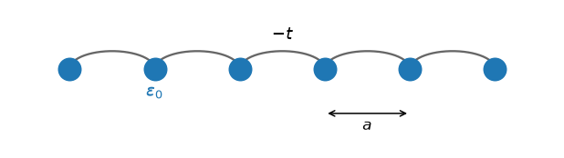
The monatomic chain as PythTB stores it: one orbital per cell at onsite energy ε₀ (blue), nearest-neighbour hopping −t (arcs), lattice constant a. Every model in this notebook reduces to exactly this data: positions, onsite energies, and a list of hoppings. — Figure 1 · notebook §2 · cell 6
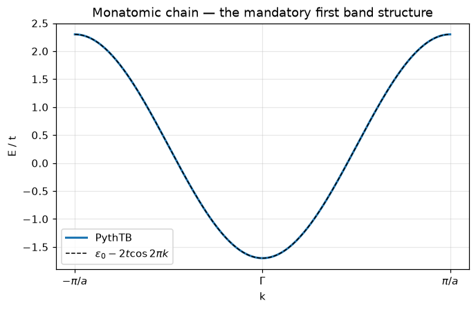
Band structure of the chain above: the numerical eigenvalues (solid) lie exactly on the analytic tight-binding cosine band (dashed). The bandwidth 4t and the band minimum at Γ (for t > 0 in our sign convention) are the two numbers to read off any 1D band plot. — Figure 2 · notebook §2 · cell 7
L2 · notebook §3, §6, §13
The SSH chain
Two sites per cell teach dimerization, gap closing, end states and the winding number — the whole of topology in one dimension.
Two sites per cell, alternating bonds
One symbolic model, three insulators
The gap closes at exactly one point
Cut the chain: end modes appear
Where the electron actually sits: the Wannier function
The winding number
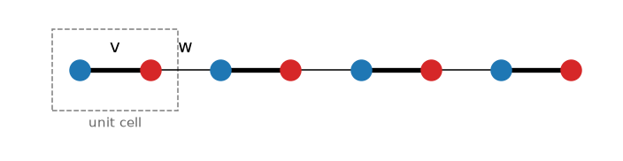
The SSH chain: two orbitals per cell (blue at τ = 0, red at τ = ½) with alternating intracell hopping v (thick) and intercell hopping w (thin). Which bond is 'inside' the cell is a choice — but once the chain ends somewhere, the choice of where to cut becomes physical, and that is the entire topological story of this model. — Figure 3 · notebook §3 · cell 10
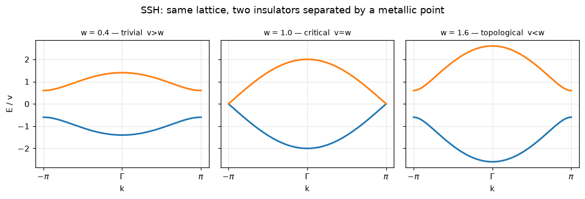
SSH bands for three dimerizations, computed from ONE symbolic model by broadcasting over w. The spectra of w = 0.4 and w = 1.6 look identical — band energies cannot distinguish the two insulators — yet they are topologically distinct: no smooth deformation connects them without passing through the gapless point w = v (middle panel). — Figure 4 · notebook §3 · cell 11
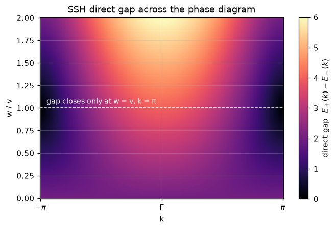
The direct gap over the whole (k, w) plane: it vanishes at exactly one point, (k, w) = (π, v). Any path from the trivial (bottom) to the topological (top) region must cross that point — a gap closing is the unavoidable toll of a topological transition. — Figure 5 · notebook §3 · cell 12
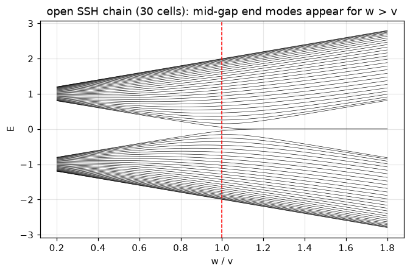
Spectrum of an open SSH chain versus dimerization. For w < v the finite chain simply shows the bulk bands with a clean gap; the moment w exceeds v the chain terminates on weak bonds, and two states peel off into the gap and pin exponentially to E = 0: the bulk-boundary correspondence in its simplest incarnation — the bulk invariant (Berry phase π, computed in §9) forces boundary states to exist, whatever the microscopic details of the cut. — Figure 15 · notebook §6 · cell 23
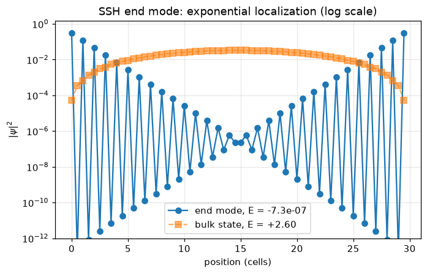
Where the end mode lives: |ψ|² of one E ≈ 0 state (circles) against a generic bulk state (squares), on a log scale. The end mode decays exponentially with decay factor (v/w)² per cell and — a chiral-symmetry fingerprint — has weight on only ONE sublattice: the even-numbered points interlace the odd ones because alternate sites carry strictly zero amplitude. — Figure 16 · notebook §6 · cell 24
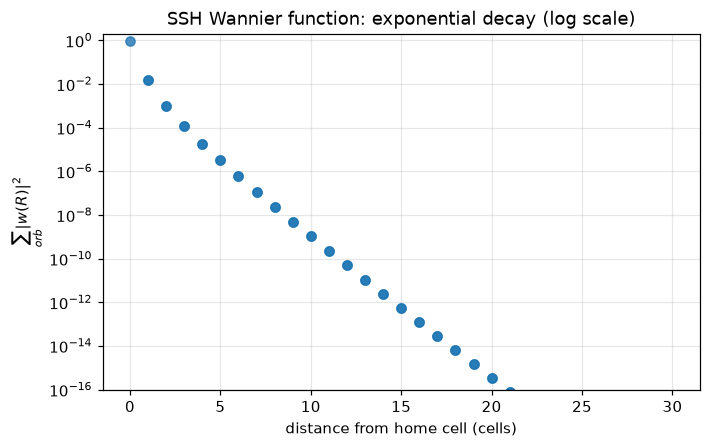
Real-space profile of the maximally-localized Wannier function built by PythTB's own Wannier engine from the SSH Bloch states: exponential decay over ten orders of magnitude, centred on the strong bond. The decay rate is set by the gap — shrink the gap and the Wannier function fattens, which is the localization-topology trade-off behind everything in Part II. — Figure 34 · notebook §13 · cell 53
L3 · notebook §4–7
Graphene & flat bands
Honeycomb Dirac cones, how a sublattice potential gaps them, exactly flat bands, ribbons, supercells and defects.
The honeycomb: two sublattices, one hexagonal zone
Dirac cones — and how to gap them
The cone as a surface
Exactly flat bands: the Lieb lattice
The kagome lattice: flat band meets Dirac cone
Ribbons: finite across, infinite along
Supercells and defects
The honeycomb Bloch Hamiltonian
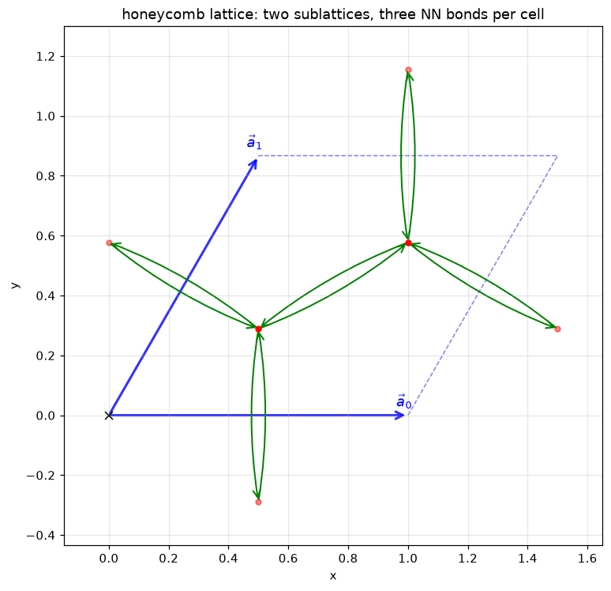
The honeycomb lattice as PythTB sees it (built-in visualize): sublattice A and B orbitals, the two lattice vectors, and the three nearest-neighbour bonds each cell contributes. The two-site basis — not the hexagonal shape — is what produces two bands and makes a Dirac point possible. — Figure 6 · notebook §4 · cell 14
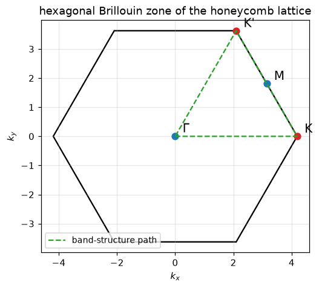
The Brillouin zone with the high-symmetry points and the Γ–K–M–K'–Γ path used in every honeycomb band plot below. K and K' (red) are the two inequivalent zone corners where the Dirac cones live; they are NOT related by a reciprocal lattice vector, which is why breaking the symmetry between them (as the Haldane model does in §14) has physical consequences. — Figure 7 · notebook §4 · cell 15
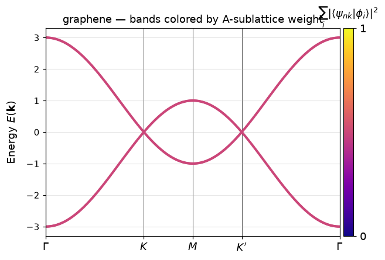
Graphene bands along the BZ path just shown, colored by the weight of each state on sublattice A. Away from the Dirac points the bands mix both sublattices equally (green); the linear crossings at K and K' are protected by the equivalence of the two sublattices — inversion symmetry. — Figure 8 · notebook §4 · cell 16
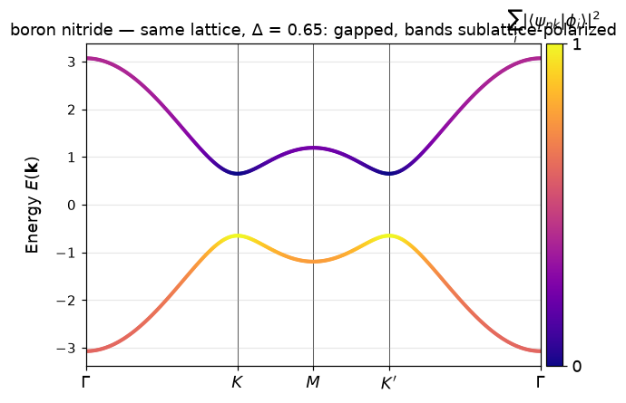
Boron nitride: chemically, B and N atoms make the two sublattices inequivalent — modeled by the staggered onsite ±Δ. The Dirac points gap out and the band coloring shows the physics: the valence band concentrates on the low-energy (N-like) sublattice, the conduction band on the other. Same lattice, same hoppings — a semimetal became an insulator by symmetry breaking. — Figure 9 · notebook §4 · cell 16
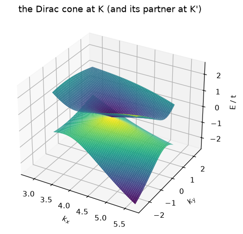
The energy surface E(kx, ky) near the zone corner: the two bands meet in a cone — dispersion linear in every direction, the hallmark of massless Dirac fermions. The slope is the Fermi velocity; in real graphene it is c/300, which is why relativistic phenomenology shows up at meV energies. — Figure 10 · notebook §4 · cell 17
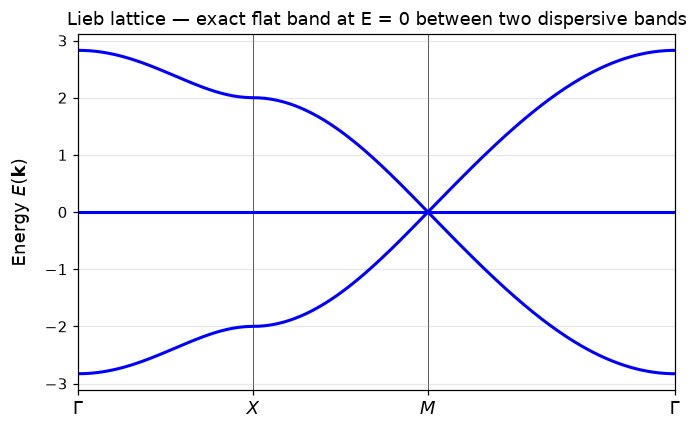
Lieb-lattice bands: two dispersive bands touching a perfectly flat band at E = 0. Flat means infinite effective mass — electrons in this band cannot propagate at all, because every state is built from the interference-locked plaquette configurations shown in the next figure. — Figure 11 · notebook §5 · cell 19
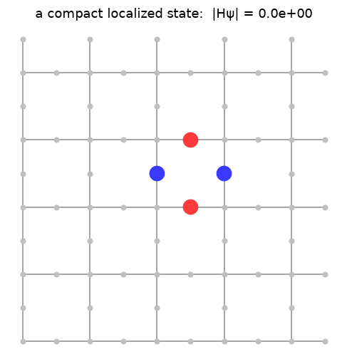
The flat band, explained in one picture: a state with alternating signs (red/blue) on the four edge sites of a single plaquette. Each neighbouring corner site couples to a +1 and a −1 with equal hopping, so the amplitudes cancel exactly and the state is a strict eigenstate at E = 0. One such state exists per plaquette — a macroscopically degenerate band of them. — Figure 12 · notebook §5 · cell 20
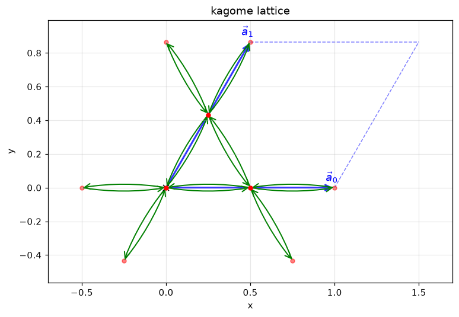
The kagome lattice: corner-sharing triangles, three sites per cell. Geometric frustration — every closed loop of bonds has odd length 3 — is what breaks particle-hole symmetry and pins the flat band at the TOP of the spectrum for t < 0 rather than in the middle. — Figure 13 · notebook §5 · cell 21
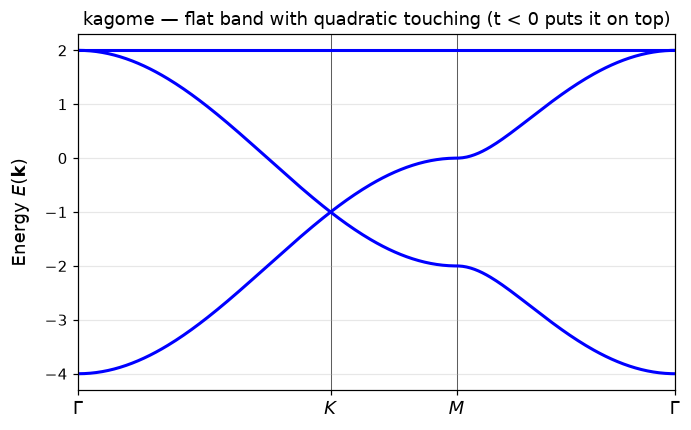
Kagome bands: a Dirac crossing at K (graphene-like, from the underlying triangular Bravais lattice) plus an exactly flat band touching the middle band quadratically at Γ. The kagome CLS lives on a hexagon with alternating signs; unlike the Lieb case the touching makes the flat band's topology singular — it cannot be spanned by exponentially localized Wannier functions. — Figure 14 · notebook §5 · cell 21
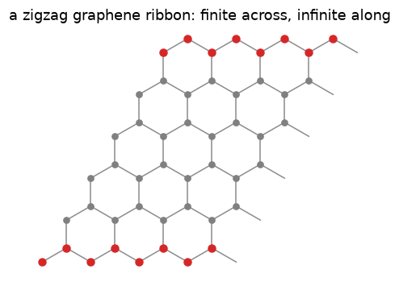
The ribbon geometry produced by cut_piece: six cells wide, periodic along the horizontal direction (a few periods are drawn). The outermost atoms (red) form zigzag edges, and — crucially — the top and bottom edge atoms belong to OPPOSITE sublattices. The flat edge band in the next figure lives on exactly these red sites. — Figure 17 · notebook §6 · cell 25
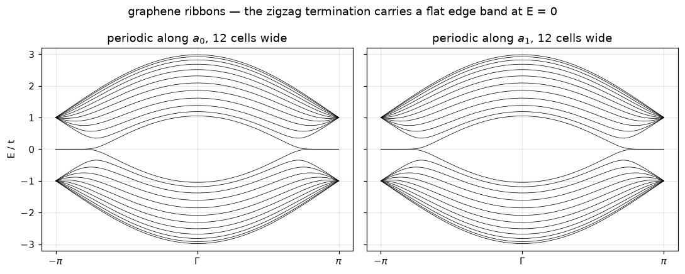
Ribbon band structures for the two cut directions. Between the projections of K and K' (around k = π) a nearly flat band sits at E = 0: these are the zigzag edge states, one per edge, living on a single sublattice. Their flatness (zero velocity) concentrates density of states at the Fermi level of neutral graphene — the seed of the edge magnetism computed in §29. — Figure 18 · notebook §6 · cell 26
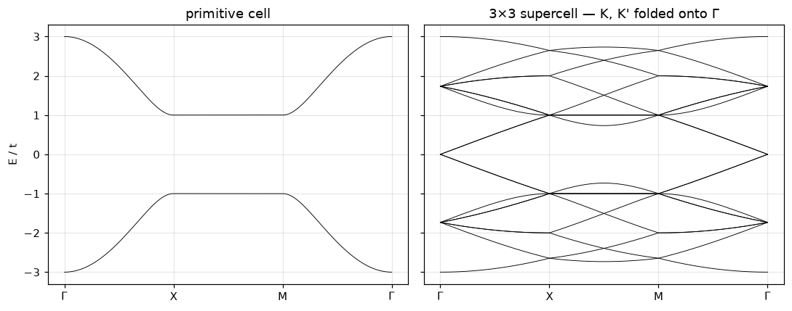
Band folding: the same graphene crystal described in its primitive cell (left) and in a 3×3 supercell (right). Nothing physical changed — the supercell BZ is 9× smaller, so the bands fold back 9× denser, and both Dirac points land on Γ. Folding is the price of any supercell treatment (defects, disorder, magnetic flux) and must not be mistaken for new physics. — Figure 19 · notebook §7 · cell 28
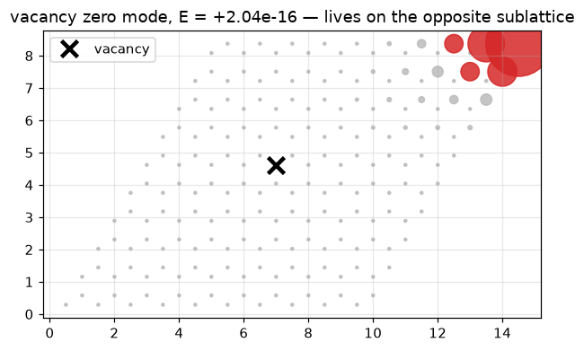
A single vacancy in a graphene flake (black cross) and the zero mode it creates (red, symbol size ∝ |ψ|²). Removing one A-site leaves the B sublattice with one extra site, and on any bipartite lattice that imbalance guarantees an exact E = 0 state confined to the majority sublattice — decaying as a power law around the missing atom. The proof is counting, not perturbation theory, so the mode survives at any hopping strength. — Figure 20 · notebook §7 · cell 29
L4 · notebook §8, §11–12
Spin, 3D, materials
Spinful models with Rashba and Zeeman terms, the simple cubic crystal and its density of states, and real silicon from Wannier90.
Spin, natively
Spin–momentum locking
Three dimensions: the simple cubic crystal
The density of states and its van Hove kinks
A real material: silicon in the diamond structure
Hoppings decay; truncate and compare
Spin–orbit on a lattice, and the DOS
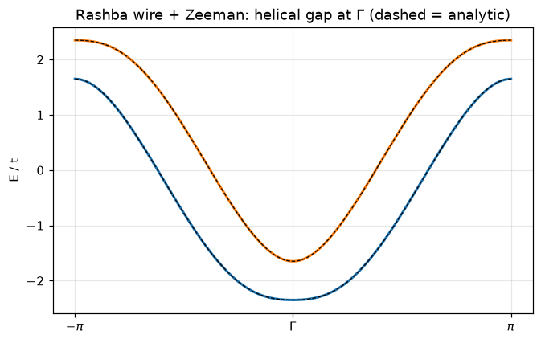
Bands of the spinful wire. Rashba coupling alone would give two shifted bands crossing at k = 0; the Zeeman field opens the 'helical gap' at that crossing. Tuning the chemical potential into this gap leaves a single pair of counter-propagating, spin-momentum-locked modes — the starting point of every Majorana nanowire proposal. — Figure 21 · notebook §8 · cell 31
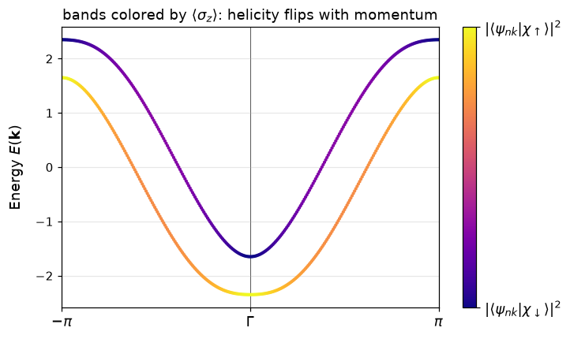
The same bands colored by the spin projection ⟨σz⟩ (plot_bands with proj_spin): near k = 0 the Zeeman term dominates and polarizes the spins along z; at larger |k| the Rashba field wins and rotates them into the y direction, the color fading toward the middle of the scale. — Figure 22 · notebook §8 · cell 32
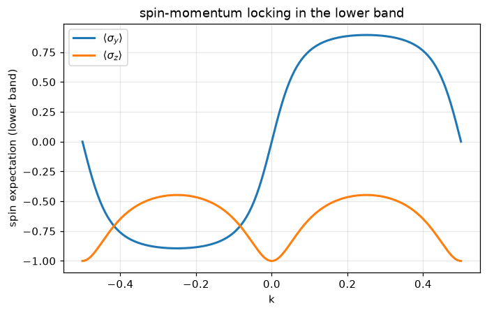
Spin texture of the lower band: ⟨σy⟩ is odd in k (the Rashba field is ∝ sin k · σy) while ⟨σz⟩ is even and peaks at k = 0 where the Zeeman term rules. A right-mover and a left-mover at the same energy inside the helical gap therefore carry nearly opposite spins — backscattering requires a spin flip, which is what protects helical transport. — Figure 23 · notebook §8 · cell 33
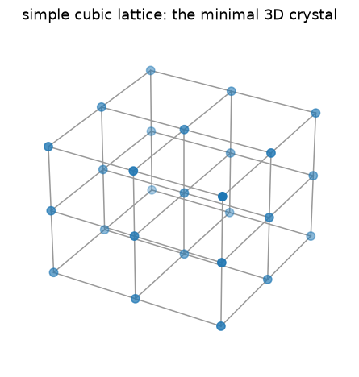
The simple cubic lattice: one orbital per site, hopping −t along each of the three axes. Its band is the sum of three independent 1D cosine bands — the rare 3D problem with a closed-form answer, which is why it opens the 3D part of this notebook as the analytic benchmark. — Figure 28 · notebook §11 · cell 43
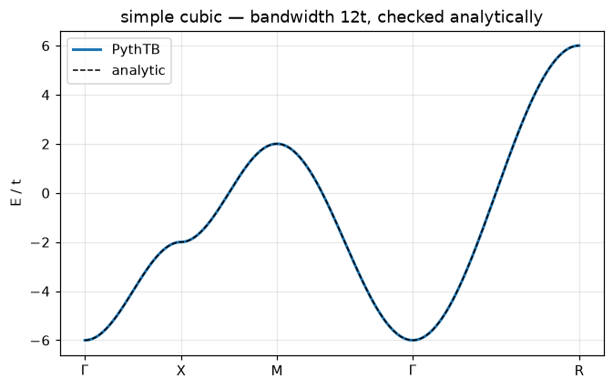
The simple-cubic band along a standard path. Reading it dimension by dimension: bandwidth 12t = 3 × 4t (one 4t per axis), minimum at Γ where all three cosines add, maximum at the zone corner R where all three subtract. Numerics and the analytic sum of cosines are indistinguishable. — Figure 29 · notebook §11 · cell 44
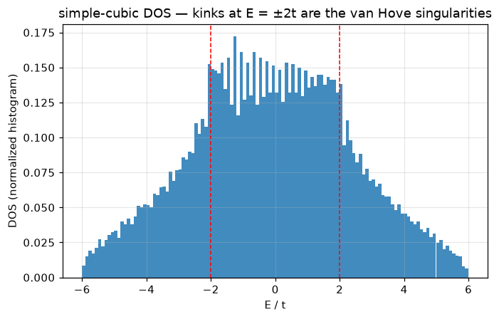
Density of states from a histogram of 216,000 eigenvalues. In 3D the van Hove singularities are kinks (discontinuous slope) rather than the divergences of 2D — the dimensionality of a material is legible in the SHAPE of its DOS anomalies. The band edges at ±6t rise as √|E − E_edge|, the free-electron-like signature of a parabolic band minimum. — Figure 30 · notebook §11 · cell 45
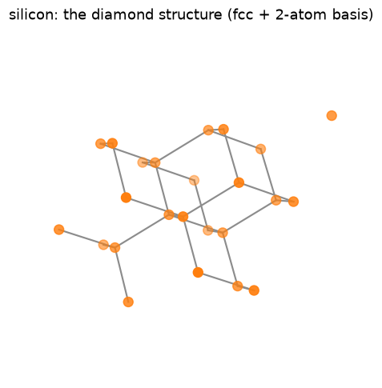
The diamond structure of silicon: two interpenetrating fcc lattices, each atom bonded tetrahedrally to four neighbours. Four sp³ bonding orbitals per atom pair fill to make the valence bands; the Wannier90 dataset below compresses exactly those bands (plus four antibonding partners) into 8 localized functions whose hoppings PythTB reads back in. — Figure 31 · notebook §12 · cell 47
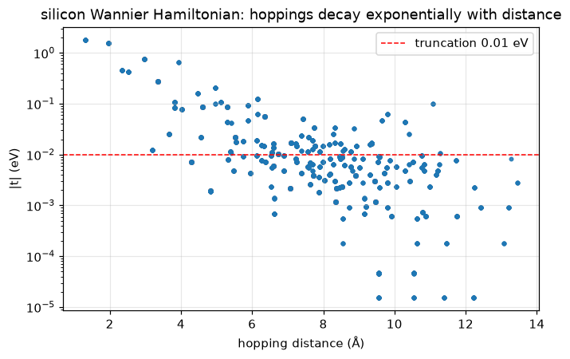
Every hopping matrix element of the silicon Wannier Hamiltonian versus bond length, on a log scale: five orders of magnitude of clean exponential decay. This is the numerical face of Kohn's 'nearsightedness' — gapped bands have exponentially localized Wannier functions — and it is what makes the truncation studied next a controlled approximation rather than a leap of faith. — Figure 32 · notebook §12 · cell 48
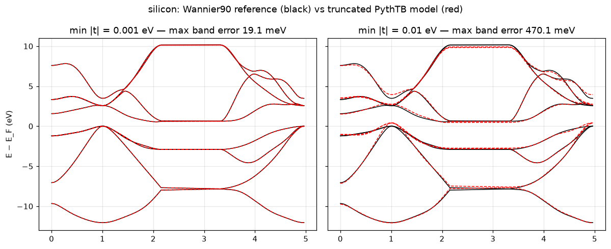
First-principles silicon bands (black) against the truncated tight-binding model (red dashed) at two truncation levels. Keeping hoppings down to 1 meV reproduces DFT to ~20 meV across 8 bands and 17 eV of bandwidth — from a Hamiltonian with a few hundred numbers. The right panel shows the price of an aggressive cut: the conduction bands, whose Wannier functions spread further, degrade first (quantified in exercise I.6). — Figure 33 · notebook §12 · cell 49
L5 · notebook §9–10
Berry phase & pumping
The Berry phase as the position of charge, polarization as a Wannier centre, and the Thouless pump as a quantized flow.
Where is the electron's charge?
The Rice–Mele cycle
The Wannier centre winds once per cycle
The pump seen from the ends
Berry phase, polarization, pumped charge
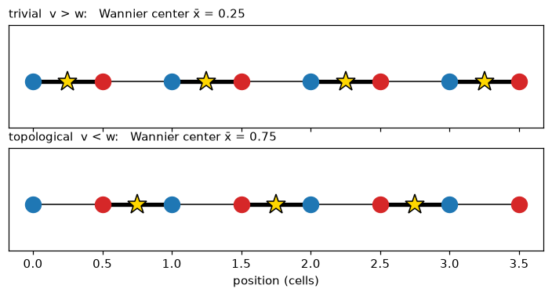
The polarization difference, drawn: the occupied band's Wannier center (star) sits at the middle of whichever bond is STRONG — x̄ = ¼ inside the cell in the trivial phase, x̄ = ¾ (on the intercell bond) in the topological one. Cutting the chain through a strong bond costs an end state: comparing the two rows shows immediately why the topological chain, terminated at a cell boundary, must leave half an electron's worth of charge behind at each end. — Figure 24 · notebook §9 · cell 36
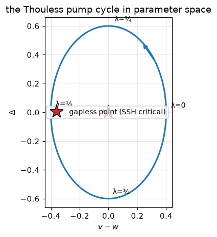
The pump protocol: over one period the dimerization (v − w) and the staggered onsite Δ trace a loop that encircles the SSH critical point (star), where the bulk gap would close. The pumped charge equals the winding number of this loop around the star — which is why the off-center cycle of exercise I.5 pumps nothing. Enclosing a gapless point is to a pump what enclosing a solenoid is to an Aharonov–Bohm phase. — Figure 25 · notebook §10 · cell 39
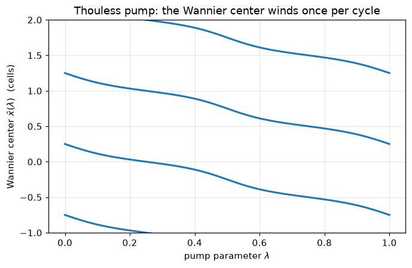
Wannier-center flow over one pump cycle (several unit cells shown). The charge center advances smoothly and ends one full lattice constant from where it started: exactly one electron per cell has been transported, with no bias voltage — quantized by the Chern number of the (k, λ) torus, not by any fine-tuning of the drive. — Figure 26 · notebook §10 · cell 40
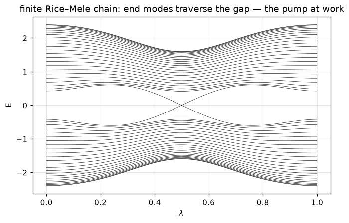
The pump seen from a finite chain: as λ advances, bound states peel off one band edge, cross the gap on the chain's ends, and merge into the other band. That gap traversal is how the transported charge physically enters and leaves the sample boundary — the spectral flow that MUST accompany a nonzero Chern number, here resolved state by state. — Figure 27 · notebook §10 · cell 41
L6 · notebook §14
Chern insulators
The Haldane model: Berry curvature, the Chern number, the phase diagram, chiral edge states and a real-space marker.
Haldane's trick: complex hoppings, no magnetic field
Berry curvature: where the geometry lives
The Haldane phase diagram
One chiral edge mode per edge
Topology without k-space: the local Chern marker
Chern number and the Haldane masses
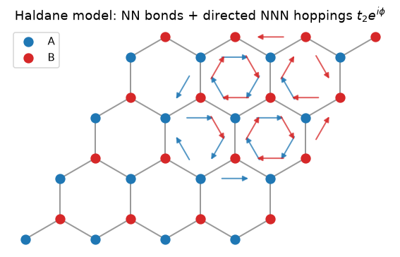
The Haldane model's key ingredient: complex second-neighbour hoppings whose positive-phase direction circulates counter-clockwise around A sublattice triangles (blue arrows) and clockwise around B (red). An electron hopping around one small triangle picks up phase φ, around a full hexagon zero — a staggered magnetic flux pattern that breaks time-reversal with NO net field, which is why this is a 'quantum Hall effect without Landau levels'. — Figure 35 · notebook §14 · cell 56
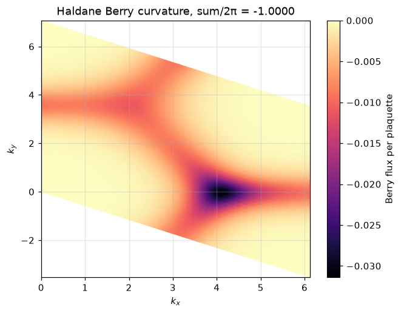
Berry curvature of the occupied band over the Brillouin zone. It is not spread uniformly: it concentrates at the (gapped) Dirac points, where the band wavefunction twists fastest — each former Dirac cone contributes close to half the total. The integral over the BZ is quantized to −2π regardless of how the curvature is distributed: that rigidity IS the Chern number. — Figure 36 · notebook §14 · cell 58
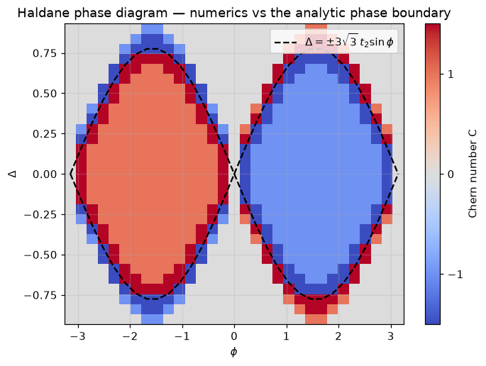
The Haldane phase diagram computed point by point: Chern number as a function of the TRS-breaking phase φ and the inversion-breaking mass Δ. The two competing masses fight at the two valleys independently, giving the celebrated lobes; the numerical boundary lands exactly on the analytic curve Δ = ±3√3 t₂ sin φ (dashed). Points ON the boundary have no Chern number at all — the gap is closed there, and PythTB rightly refuses. — Figure 37 · notebook §14 · cell 59
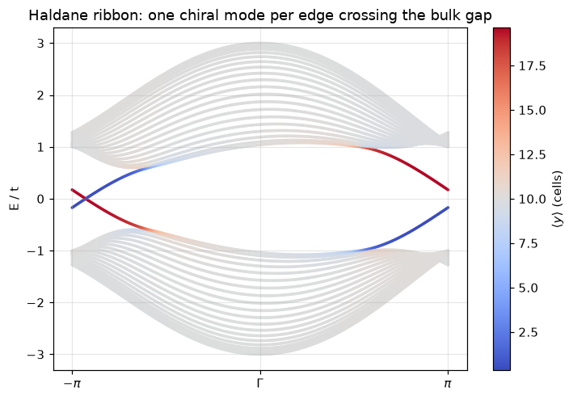
Bulk-boundary correspondence, resolved in space: ribbon bands colored by the transverse position ⟨y⟩ of each state. The bulk bands (mixed colors) are gapped; two branches cross the gap, one confined to each edge (deep red / deep blue), with opposite velocities — chiral edge channels. Their number equals |C|, and no edge disorder can backscatter them: the counter-propagating partner lives on the other side of the sample. — Figure 38 · notebook §14 · cell 60
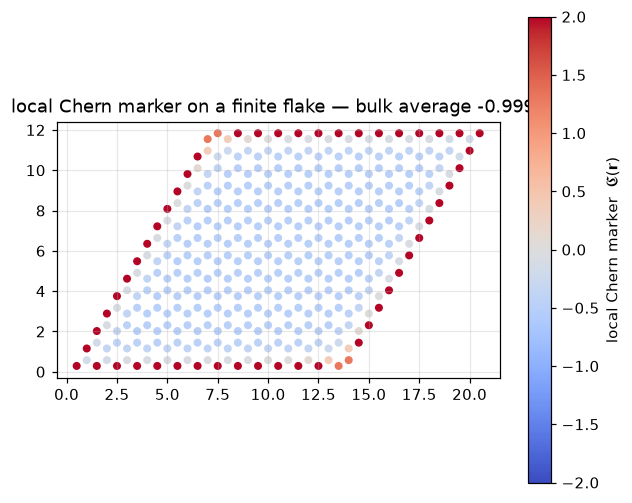
The Chern number without k-space: the Bianco–Resta local marker evaluated on every site of a finite flake. Deep in the interior it locks to C = −1; at the boundary it swings hard positive so that the sample-wide average is exactly zero (the marker is a trace of a commutator). The edge is not noise — it is the same spectral flow that carries the chiral edge states. — Figure 39 · notebook §14 · cell 61
L7 · notebook §15–16
Z₂ & spin Hall
Time reversal changes the rules: Kramers pairs, band inversion, the Z₂ invariant from Wannier flow, helical edges.
Band inversion: the switch
The Z₂ invariant from Wannier flow
Helical edge states: a Kramers pair per edge
Kane–Mele, Kramers, and the two ways to Z₂
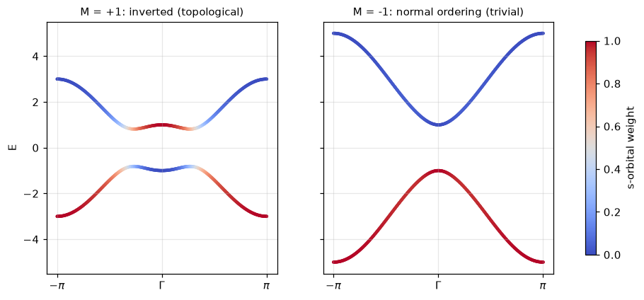
Band inversion, the mechanism behind the BHZ prediction: bands along kx colored by s-orbital character. For M 0 (left) the characters are exchanged in a neighbourhood of Γ: the bands have inverted, and no local perturbation can undo the exchange without closing the gap. In HgTe quantum wells the knob M is the well thickness, and the inversion happens at d ≈ 6.3 nm. — Figure 42 · notebook §16 · cell 67
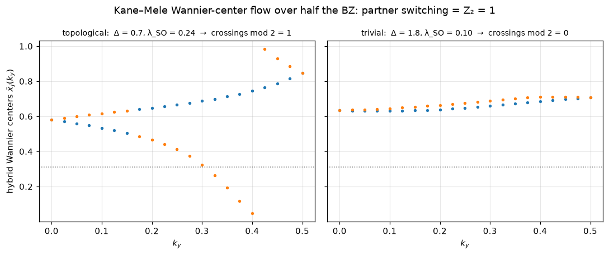
The Z₂ diagnostic: hybrid Wannier centers x̄(ky) of the two occupied bands, followed over half the Brillouin zone. At the time-reversal-invariant momenta ky = 0 and ½ the centers come in Kramers-degenerate pairs; in between they may exchange partners. Left: the pair switches — any reference line (dotted) is crossed an odd number of times, Z₂ = 1. Right: the centers return to their partners, even crossings, trivial. This counting is gauge-invariant and needs no symmetry beyond time reversal. — Figure 40 · notebook §15 · cell 63
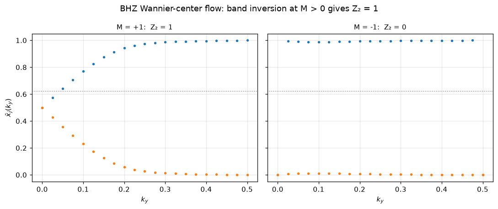
The same Wannier-flow diagnostic applied to the BHZ model: partner switching (left, odd crossings of the reference line) for the inverted regime, none for the normal one. The Z₂ index sees the band inversion of the previous figure without ever looking at orbital character — invariants do not care how the topology was engineered. — Figure 43 · notebook §16 · cell 68
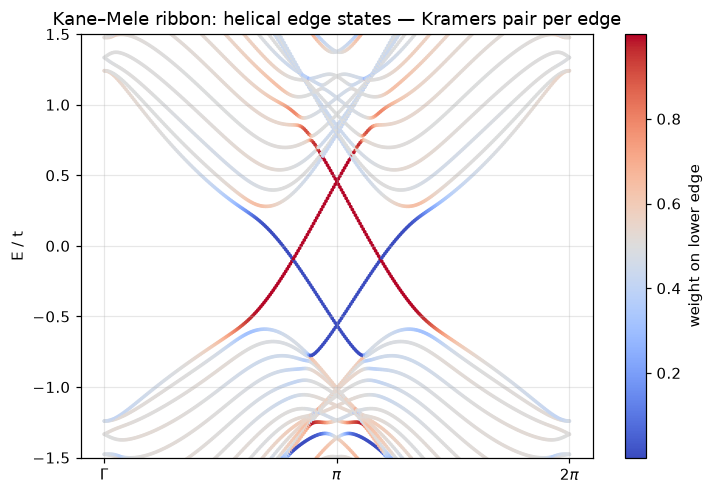
Kane–Mele ribbon bands colored by weight on the lower edge. Unlike the Haldane chiral edge (one direction per edge), each edge here carries TWO counter-propagating modes forming a Kramers pair with opposite spins — helical states. Time reversal forbids elastic backscattering between Kramers partners, so the edges conduct perfectly as long as TRS holds; a magnetic impurity would break the protection. — Figure 41 · notebook §15 · cell 64
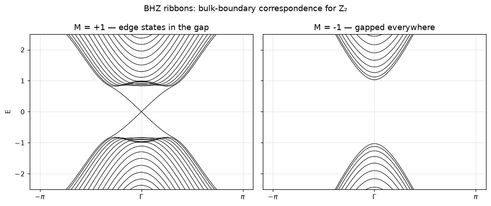
BHZ ribbon spectra in the two phases. Only the inverted regime (left) carries states crossing the bulk gap — the helical edge channels whose quantized conductance 2e²/h was measured by the Würzburg group in 2007, the first experimental topological insulator. The trivial ribbon (right) is gapped through and through. — Figure 44 · notebook §16 · cell 69
L8 · notebook §17–20
Corners, Majoranas, Weyl
Higher-order topology, superconductivity as extra orbitals, Weyl monopoles with Fermi arcs, and the axion angle.
Four more kinds of topological matter
The BBH model: two SSH chains crossed
Higher-order topology: the quadrupole insulator
Writing pairing as hopping: the BdG trick
Superconductivity smuggled in: the Kitaev chain
Weyl semimetals: monopoles in the Brillouin zone
Sliced Chern numbers and Fermi arcs
The axion angle θ
BdG, Weyl, axion: the formulas
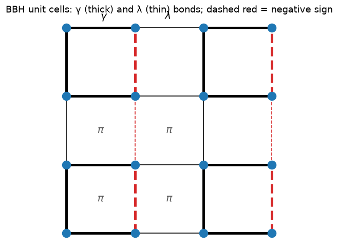
The BBH quadrupole model: four orbitals per cell coupled by intracell γ (thick) and intercell λ (thin) bonds, with the vertical bonds of one column negated (dashed red). Multiply the bond signs around any elementary square: always −1, i.e. π flux per plaquette. The flux gaps the edge spectrum too — that is what demotes the topological states from edges to corners, one dimension down. — Figure 45 · notebook §17 · cell 71
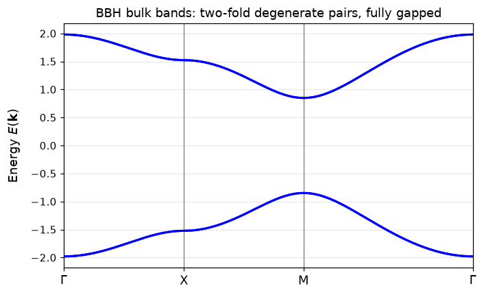
BBH bulk bands: two doubly-degenerate pairs separated by a full gap. Nothing here betrays the topology — bulk dipole moments vanish by symmetry, and only the quadrupole moment, extracted by the nested Wilson loop below, distinguishes this insulator from a trivial one. — Figure 46 · notebook §17 · cell 71
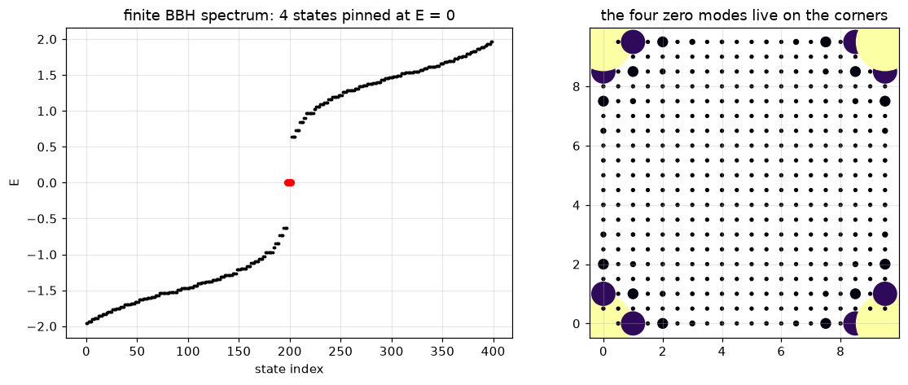
Higher-order bulk-boundary correspondence: the finite BBH sample has a gapped bulk AND gapped edges, yet four states sit pinned at E = 0 (red in the left panel), one exponentially localized on each corner (right). Each corner binds charge ±e/2 — the 2D analogue of the SSH end states, one dimension of boundary further down. — Figure 47 · notebook §17 · cell 72
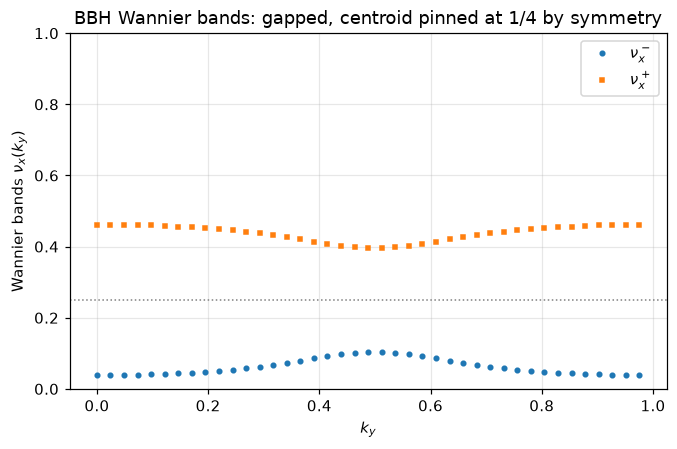
First layer of the nested construction: the Wilson-loop eigenphases (Wannier bands) ν±(ky) of the occupied pair. They disperse but never touch, and mirror symmetry pins their centroid to exactly ¼. A gapped Wannier spectrum is itself a band structure one level up — with its own Berry phase, computed next. — Figure 48 · notebook §17 · cell 73
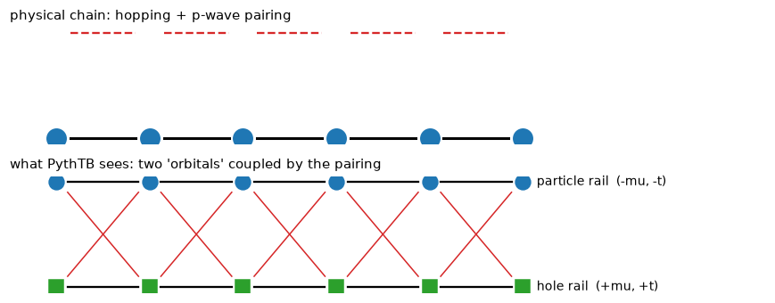
Top: the physical Kitaev chain — spinless fermions with hopping t and p-wave pairing Δ that creates/destroys PAIRS on neighbouring sites. Bottom: the Bogoliubov–de Gennes doubling PythTB actually diagonalizes — a particle rail and a hole rail (with negated parameters), the anomalous pairing recast as an ordinary inter-rail 'hopping' (red). The doubling is exact but redundant: every physical excitation appears twice, at ±E. — Figure 49 · notebook §18 · cell 76
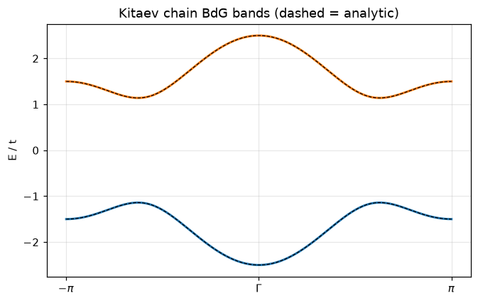
BdG bands of the Kitaev chain (solid) on top of the analytic dispersion ±√(ξ² + Δ²ₖ) (dashed). The pairing gaps the would-be Fermi points of the normal chain; the gap at k = ±π/2 is purely superconducting (∝ Δ), while the gap at k = 0 and π is set by |μ ∓ 2t| — and it is the latter that closes and reopens at the topological transition μ = 2t. — Figure 50 · notebook §18 · cell 77
Open-chain BdG spectrum versus chemical potential: throughout the topological phase |μ| < 2t a pair of states clings to E = 0, splitting only exponentially in system size; past the bulk transition they merge into the continuum. This zero-bias pinning is exactly the feature hunted in tunneling experiments on proximitized nanowires — with the caveat that a tunneling CONDUCTANCE calculation is Kwant's territory, not PythTB's. — Figure 51 · notebook §18 · cell 78The two E ≈ 0 BdG eigenstates recombined into maximally end-localized combinations: each is a MAJORANA mode — equal particle and hole content, exponentially confined to one end. A single fermionic level (occupied or empty) is physically split across the two chain ends; no local probe can measure its occupation, which is the storage principle of topological qubits. — Figure 52 · notebook §18 · cell 79
The playing field: the 3D Brillouin zone with the two Weyl nodes on the kz axis — a monopole (red) and an antimonopole (blue) of Berry curvature. Every fixed-kz plane is a 2D system with a well-defined Chern number, which changes by the enclosed chirality when the plane sweeps past a node: C = −1 between the nodes (green slice), 0 outside (gray slice). — Figure 53 · notebook §19 · cell 81The direct gap along the kz axis: it collapses linearly to zero at kz = ±¼ and nowhere else — point touchings with conical dispersion in all three directions. Linear closure in 3D is generic (no fine-tuning): a Weyl node can only be removed by merging it with a partner of opposite chirality, which is why the phase is robust without any protecting symmetry beyond translation. — Figure 54 · notebook §19 · cell 82
The sliced Chern number C(kz), each point computed from a 2D model in which kz enters as a symbolic parameter: quantized plateaus with unit jumps exactly at the node positions. The jump measures the chirality of the node the slice crossed — Weyl nodes are literally the points where Chern numbers are created and destroyed. — Figure 55 · notebook §19 · cell 83Surface physics of the slab: the minimum |E(kx, kz)| over the slab bands (background) with surface-localized zero-energy states marked in red. They trace an open ARC connecting the projections of the two nodes — impossible for any isolated 2D metal, whose Fermi lines must close. The arc is the collection of chiral edge modes of all the C = −1 slices between the nodes, seen end-on; its partner lives on the opposite surface. — Figure 56 · notebook §19 · cell 84
Bulk bands of the Fu–Kane–Mele model on the diamond lattice at the time-reversal-symmetric point of the sweep (β = π), where the (111) bond strengthened by the modulation makes the system a strong topological insulator. Every band is doubly degenerate (inversion × time reversal); the topology hides in the wavefunctions, not in this spectrum — it takes the axion angle to see it. — Figure 57 · notebook §20 · cell 86The axion angle θ tracked along the adiabatic cycle β: it starts at 0 (trivial), passes exactly through π at the TRS point β = π — the quantized magnetoelectric response of a strong TI — and returns having wound by 2π. The total winding is the second Chern number C₂ = 1 of the 4D (k, β) space: the same mathematics as the Thouless pump, two dimensions higher. θ-odd physics (surface half-integer Hall response, image magnetic monopoles) lives on the π plateau. — Figure 58 · notebook §20 · cell 87
L9 · notebook §21–24
Stretching PythTB
Magnetic fields by Peierls phases, Anderson localization, a Penrose quasicrystal, and the O(N³) wall.
A magnetic field as phases on bonds
The Hofstadter butterfly
Anderson localization, one eigenvector at a time
A Penrose quasicrystal: order without periodicity
Spiky spectrum and confined states
The performance wall
Peierls phases, IPR, and the cost of dense algebra
How a uniform field enters a lattice model: hoppings along x stay real (black), hoppings along y acquire the Peierls phase exp(2πi·(p/q)·x) that grows with the column index (red labels). The pattern repeats after q columns — the magnetic supercell (dashed box) — which is why rational flux p/q restores Bloch's theorem with a q-site cell and q subbands. — Figure 59 · notebook §21 · cell 90
The Hofstadter butterfly: every eigenvalue of the square lattice at every rational flux p/q with q ≤ 32. The spectrum is a Cantor set — the pattern inside any gap-bounded wing repeats the whole. Each gap carries a quantized Hall conductance (the Diophantine labels of exercise III.1), and the giant central gaps at simple fractions are the ones seen in moiré superlattice experiments. — Figure 60 · notebook §21 · cell 90
Inverse participation ratio of every eigenstate of a disordered square-lattice box, for three disorder strengths. At W = t most states hug the extended-state line 1/N (dashed red) — their localization length exceeds the sample. As W grows the whole spectrum lifts off by orders of magnitude, band-edge states first: localization sets in from the spectral edges inward, the standard mobility-edge phenomenology compressed into a 30×30 box. — Figure 61 · notebook §22 · cell 93One band-center eigenstate at weak (left) and strong (right) disorder, |ψ|² on the actual lattice. The weak-disorder state still spreads over the whole box in an irregular interference pattern; the strong-disorder state has collapsed onto a few sites around one favourable potential fluctuation. In 2D the left state IS localized too — its ξ merely exceeds the box, a distinction our finite sample cannot resolve, and (§24) dense diagonalization cannot push much further. — Figure 62 · notebook §22 · cell 94
A Penrose tiling patch generated by de Bruijn's pentagrid construction: fat and thin rhombi, all edges of unit length, five-fold orientational order and no repeating cell anywhere. This is a legitimate PythTB model — a dim_k = 0 point cloud with hops on the rhombus edges — because nothing in the package's data model actually requires periodicity. — Figure 63 · notebook §23 · cell 96
Left: the Penrose density of states — spiky, riddled with gaps, and carrying a δ-function at E = 0. Right: the sorted spectrum, where that δ-peak appears as a plateau of ~10% of all states at exactly zero energy: the strictly confined states, destructive-interference eigenstates that aperiodic order produces in macroscopic number (fraction 81 − 50φ in the infinite tiling). — Figure 64 · notebook §23 · cell 97One confined state, extracted from the huge E = 0 degenerate subspace by projecting a single-site seed onto it: over 99% of its weight lives on a handful of vertices (red), strictly protected by interference — the amplitudes cancel on every site bordering the support. Unlike Anderson localization there is no exponential tail to speak of and no disorder: this is localization by geometry. — Figure 65 · notebook §23 · cell 98
Wall time of a full dense diagonalization versus matrix size, log-log, with the ideal N³ slope as a guide. The measured effective exponent sits below 3 in this range only because threaded BLAS gains efficiency as matrices grow; the asymptote is inescapable. Every quantity PythTB computes — bands, Berry phases, markers, Wannier functions — stands on this staircase. — Figure 66 · notebook §24 · cell 100
L10 · notebook §25–31
Limits & what next
What PythTB cannot do (transport, sparse, continuum, symmetry rails, interactions), where it goes wrong silently, and the road onward.
Five things PythTB cannot do
Silent wrongness
Interactions by hand: mean-field Hubbard on a zigzag ribbon
The capability matrix
Mean field, and the equation PythTB does not solve
The demonstration of §28: a 'BdG Hamiltonian' whose hole block was deliberately corrupted (+0.7t instead of +t). Particle-hole symmetry demands the spectrum coincide with its negated mirror image (dashed) — it visibly does not — yet PythTB raised no objection at any point, because Hermiticity, which it does check, is intact. Symmetry correctness of a BdG problem is entirely the user's burden. — Figure 67 · notebook §28 · cell 108
Self-consistent local moments mᵢ = n↑ᵢ − n↓ᵢ across the zigzag ribbon, orbital by orbital from one edge to the other. The flat edge band of §6 polarizes under the Hubbard interaction: each edge orders ferromagnetically, the two edges antiferromagnetically (total Sz = 0, as Lieb's theorem demands on a balanced bipartite lattice), and the moments decay within a few rows into the bulk. — Figure 68 · notebook §29 · cell 110The converged mean-field solution painted onto the ribbon itself (three periods shown; symbol size and color ∝ mᵢ): spin-up order along one zigzag edge, spin-down along the other, near-zero moment in the interior. The A-sublattice/B-sublattice character of the two edges (§6) is what selects the antiferromagnetic inter-edge alignment. — Figure 69 · notebook §29 · cell 111